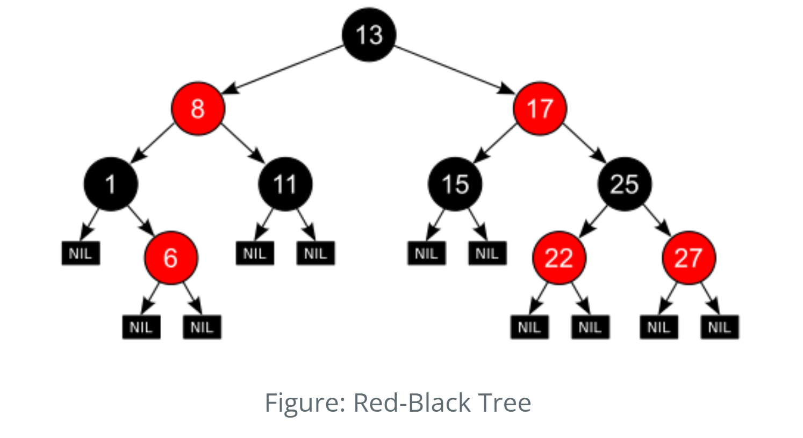
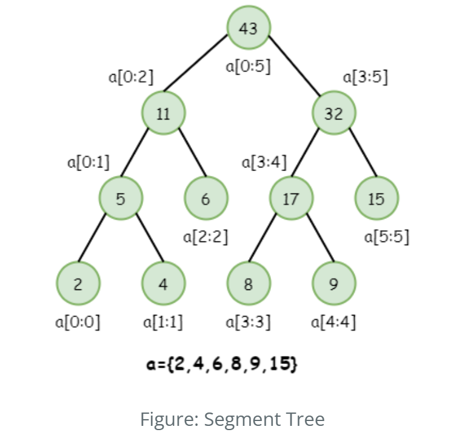
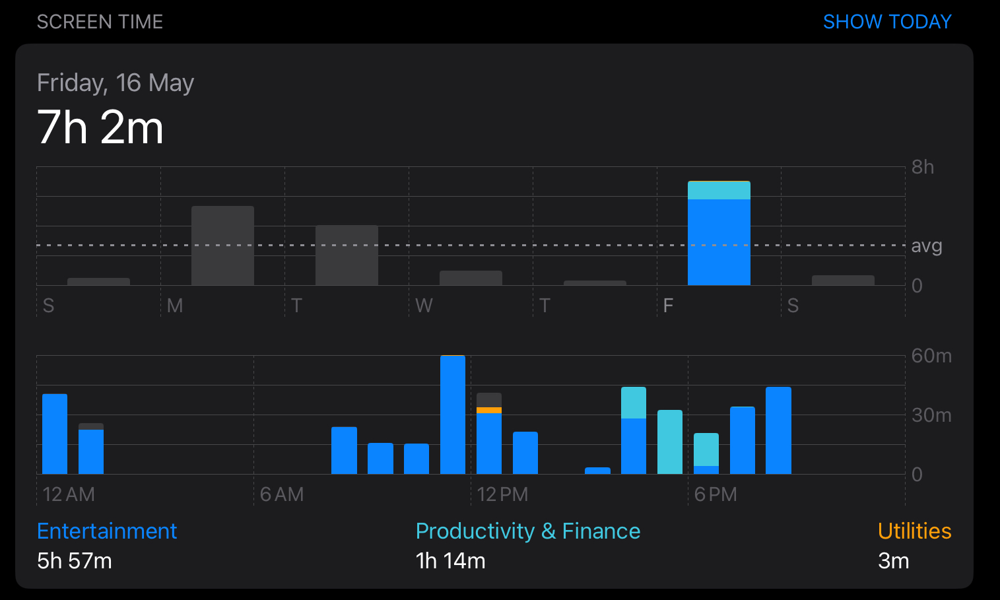
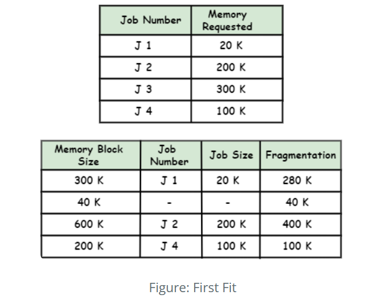
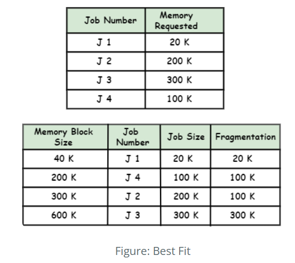
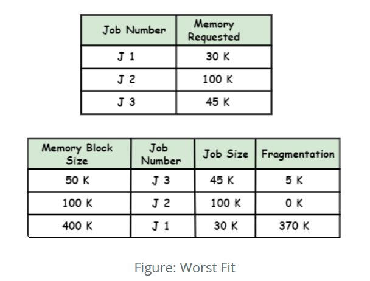

Overview
Resource management involves the efficient allocation and utilization of system resources such as CPU, memory, I/O devices, and network bandwidth. The goal is to ensure that applications and processes run smoothly, maximizing system performance and user satisfaction.
Red-Black Trees

Red-Black Trees are self-balancing binary search trees used to maintain ordered sets of data efficiently under dynamic changes—like memory or process allocations.
1. Binder IPC (Inter-Process Communication)
How Used: Used within the Linux kernel’s Binder driver to manage binder objects and references efficiently.
Why RBT? Enables fast search, insert, and delete operations with O(log n) time complexity.
Example: When an app calls a system service (like
ActivityManagerService), Binder uses RBTs to track and lookup Binder nodes efficiently.
Source: drivers/android/binder.c
2. Virtual Memory Areas (VMAs)
How Used: The kernel uses RBTs to manage VMAs for each process.
Why RBT? Ensures efficient search and merge of memory regions when memory is allocated or freed.
Example: When an app requests memory (e.g., via malloc()),
the kernel uses the RBT to locate and manage VMAs.
Source: mm/mmap.c (see struct mm_struct)
3. Completely Fair Scheduler (CFS)
How Used: CFS uses a Red-Black Tree to organize runnable tasks by their virtual runtimes.
Why RBT? Maintains fair scheduling order and enables fast insertion and retrieval of tasks.
Example: The CPU picks the next task to run by choosing the leftmost node (least runtime).
Source: kernel/sched/fair.c (see struct cfs_rq)
4. Inode Cache Management
How Used: File systems like ext4 and Btrfs use RBTs to manage inode structures.
Why RBT? Efficient lookup for file metadata, especially for directories with thousands of files.
Example: When a file is opened, its metadata is fetched by traversing the inode RBT.
Source: File system implementation in ext4, Btrfs
Pros: Efficient O(log n) operations
Cons: Implementation complexity
Segment Trees

Segment trees efficiently handle range queries and updates. In OS resource monitering the segment trees has appealing role for maintaining the usage details of the operating system. The best example for this is the Android Digital Wellbeing which shows the usgae history and notification of the device throughout the span of the time. The advantage of the segment tree can be utilized for getting the maximum usage of the application, max utilization of the device resources like which apps have used the resources and for what amount of time the cpu was utilized by the process can be viewed easily.

| Operation | Time Complexity | Description |
|---|---|---|
| Build | O(n) | Builds the tree from input array using bottom-up merging |
| Query | O(log n) | Fetches range sum/min/max in log(n) time |
| Update | O(log n) | Updates a single element by updating log(n) nodes |
| Space | O(2n) | Uses extra space to store segment nodes |
Bin-Packing Algorithms
- These algorithms optimize the placement of resources (such as processes or data) into predefined containers (like memory blocks or disk sectors).
- Bin-packing algorithms are used in memory management (allocating blocks of memory to processes), disk management (storing files in disk sectors), and in cloud computing (allocating virtual machines to physical hosts).
- The aim of this algorithm is to efficiently pack the items in bins such that minimum number of bins are utilised and all items are packed.

1.Quickly allocates resources to the first available slot, enhancing allocation speed.

2.Minimizes wasted resources by placing them in the tightest available slot.

3.Distributes resources to the largest available slot to balance load over time.
| Algorithm | Description |
|---|---|
| First Fit (FF) | Place each item in the first bin that can accommodate it. |
| Next Fit (NF) | If an item doesn’t fit in the current bin, start a new bin. |
| Best Fit (BF) | Place each item in the bin with the least remaining space that still accommodates the item. |
| Worst Fit (WF) | Place each item in the bin with the most remaining space that still accommodates the item. |
| First Fit Decreasing (FFD) | Sort items in decreasing order of size and use the First Fit algorithm. |
| Best Fit Decreasing (BFD) | Sort items in decreasing order of size and use the Best Fit algorithm. |
| Harmonic Fit (HF) | Place each item in the bin with the least harmonic mean of the remaining space. |
| First Fit Decreasing by Width (FFDW) | Sort items in decreasing order of their width and use the First Fit algorithm. |
| Guillotine Cut (GC) | Cut items in a guillotine pattern (vertical or horizontal) to optimize bin packing. |
| Genetic Algorithm (GA) | Use genetic algorithms to evolve a set of bins that optimally pack items. |
Skip Lists
The time complexity required to find an element in a sorted array is O(log n) using binary search, whereas the search operation in a sorted or unsorted list takes O(n), which is much more time-consuming compared to arrays. By using a skip list, if the list is sorted, we can reduce the time complexity of the search to O(log n), which is significantly more efficient.
The skip list is a probabilistic data structure with a hierarchy of sorted lists. A perfect skip list is one where the number of levels equals log n, where n is the number of elements in the list. In Android OS, this can be used for search operations in the file system or in media playlists, where elements are sorted in some order, such as alphabetically or by size.
| Operation | Average Case | Worst Case |
|---|---|---|
| Search | O(log n) | O(n) |
| Insert | O(log n) | O(n) |
| Delete | O(log n) | O(n) |
| Space | O(n) | O(nlogn) |
References:
- https://medium.com/swlh/exploring-the-bin-packing-problem-f54a93ebdbe5
- https://medium.com/@tech_future/bin-packing-nfd-algorithm-custom-more-reliable-algorithm-alternative-cebbe7c27ede